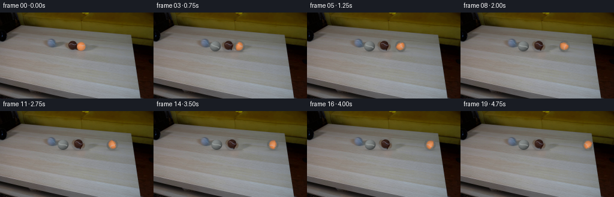
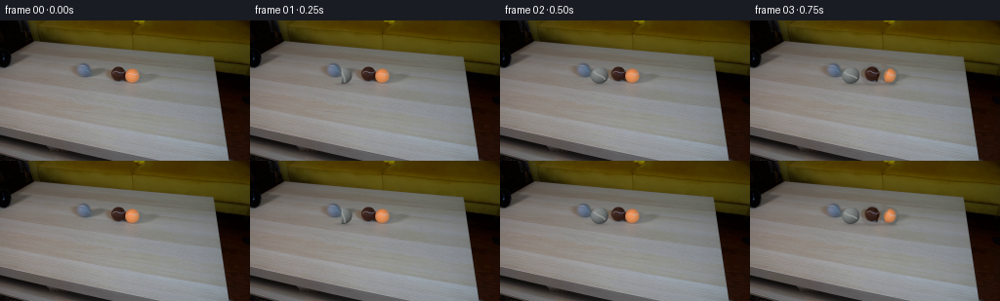

CODING AGENTS AS PIXEL WORLD MODELS
traex/GPT-5.6-Sol · 0030
点击播放 · 原生 RGB 像素
逐轮保存的候选
回放视频、检查图与代码变化。
每份候选均可单独播放。实际图片检查记录在下方工具轨迹中。
候选 01播放与检查图
点击播放 · 原生 RGB 像素


展开代码变化
--- 上一保存版本
+++ 本次保存版本
@@ -0,0 +1,196 @@
+from pathlib import Path
+
+import cv2
+import numpy as np
+from PIL import Image
+
+import artifact_io
+
+
+CASE_DIR = Path(__file__).resolve().parent
+H, W = 144, 256
+
+
+def soft_ellipse(h, w, cx, cy, rx, ry, feather=1.15):
+ """Antialiased ellipse mask, evaluated at four sub-pixel samples."""
+ yy, xx = np.mgrid[:h, :w].astype(np.float32)
+ coverage = np.zeros((h, w), np.float32)
+ for oy in (-0.25, 0.25):
+ for ox in (-0.25, 0.25):
+ q = np.sqrt(((xx + ox - cx) / rx) ** 2 + ((yy + oy - cy) / ry) ** 2)
+ coverage += np.clip((1.0 + feather / min(rx, ry) - q) * min(rx, ry) / feather, 0, 1)
+ return coverage * 0.25
+
+
+def over(dst, rgb, alpha):
+ a = np.clip(alpha, 0, 1)[..., None].astype(np.float32)
+ return dst * (1.0 - a) + rgb.astype(np.float32) * a
+
+
+def add_shadow(frame, cx, cy, rx, strength=0.30):
+ yy, xx = np.mgrid[:H, :W].astype(np.float32)
+ # Contact core plus a very soft cast shadow extending down and to the right.
+ core = np.exp(-0.5 * (((xx - (cx + 0.8)) / (rx * 0.67)) ** 2 +
+ ((yy - (cy + 8.7)) / 1.10) ** 2))
+ penumbra = np.exp(-0.5 * (((xx - (cx + 1.6)) / (rx * 1.02)) ** 2 +
+ ((yy - (cy + 9.2)) / 2.0) ** 2))
+ a = strength * core + strength * 0.20 * penumbra
+ tint = np.zeros_like(frame) + np.array([65, 61, 57], np.float32)
+ return over(frame, tint, np.clip(a, 0, 0.46))
+
+
+def make_ball_sprite(source, center, radius, kind):
+ """Recover a textured ball from frame zero, repairing its touching side."""
+ cx, cy = center
+ size = 31
+ r = size // 2
+ yy, xx = np.mgrid[:size, :size].astype(np.float32)
+ dx, dy = xx - r, yy - r
+
+ sx = cx + dx
+ sy = cy + dy
+ if kind == "brown":
+ # The orange ball hides the last few columns of the brown ball.
+ sx = np.where(dx > 6.2, cx - dx, sx)
+ rx, ry = radius, radius * 0.88
+ else:
+ # Likewise recover the hidden left side of the orange ball from its
+ # clean right hemisphere.
+ sx = np.where(dx < -3.8, cx - dx, sx)
+ rx, ry = radius, radius * 0.92
+
+ rgb = cv2.remap(source.astype(np.float32), sx, sy,
+ interpolation=cv2.INTER_CUBIC, borderMode=cv2.BORDER_REFLECT_101)
+ q = np.sqrt((dx / rx) ** 2 + (dy / ry) ** 2)
+ alpha = np.clip((1.055 - q) / 0.115, 0, 1)
+
+ # Restore the spherical edge falloff after mirroring the occluded texture.
+ z = np.sqrt(np.clip(1.0 - q * q, 0, 1))
+ edge_light = 0.82 + 0.18 * z
+ rgb *= edge_light[..., None]
+ return np.clip(rgb, 0, 255), alpha
+
+
+def place_sprite(frame, sprite, alpha, cx, cy, angle=0.0):
+ """Place a recovered sprite at a subpixel location with a subtle roll."""
+ size = sprite.shape[0]
+ c = (size - 1) * 0.5
+ # Only a tiny rotation is used: the broad illumination remains effectively
+ # camera-fixed while fine mottling supplies a visible rolling cue.
+ m = cv2.getRotationMatrix2D((c, c), angle, 1.0)
+ rs = cv2.warpAffine(sprite, m, (size, size), flags=cv2.INTER_CUBIC,
+ borderMode=cv2.BORDER_REFLECT_101)
+ ra = cv2.warpAffine(alpha, m, (size, size), flags=cv2.INTER_LINEAR,
+ borderMode=cv2.BORDER_CONSTANT)
+ x0, y0 = int(np.floor(cx - c)), int(np.floor(cy - c))
+ fx, fy = cx - c - x0, cy - c - y0
+ shift = np.float32([[1, 0, fx], [0, 1, fy]])
+ rs = cv2.warpAffine(rs, shift, (size, size), flags=cv2.INTER_CUBIC,
+ borderMode=cv2.BORDER_REFLECT_101)
+ ra = cv2.warpAffine(ra, shift, (size, size), flags=cv2.INTER_LINEAR,
+ borderMode=cv2.BORDER_CONSTANT)
+
+ xa, ya = max(0, x0), max(0, y0)
+ xb, yb = min(W, x0 + size), min(H, y0 + size)
+ sx0, sy0 = xa - x0, ya - y0
+ frame[ya:yb, xa:xb] = over(frame[ya:yb, xa:xb],
+ rs[sy0:sy0 + yb - ya, sx0:sx0 + xb - xa],
+ ra[sy0:sy0 + yb - ya, sx0:sx0 + xb - xa])
+ return frame
+
+
+def draw_grey_ball(frame, cx, cy, roll, clip_x=None):
+ """Analytically shade a small fuzzy grey tennis ball and its rotating seam."""
+ radius = 9.0
+ yy, xx = np.mgrid[:H, :W].astype(np.float32)
+ dx, dy = xx - cx, yy - cy
+ q2 = (dx / radius) ** 2 + (dy / (radius * 0.94)) ** 2
+ q = np.sqrt(q2)
+ alpha = np.clip((1.055 - q) / 0.115, 0, 1)
+ if clip_x is not None:
+ alpha *= np.clip((xx - clip_x + 0.35) / 0.9, 0, 1)
+
+ z = np.sqrt(np.clip(1.0 - q2, 0, 1))
+ # A fixed upper-left key light, matching the highlights on the source balls.
+ nx, ny = dx / radius, dy / (radius * 0.94)
+ light = np.clip(-0.43 * nx - 0.52 * ny + 0.73 * z, -0.2, 1.0)
+ shade = 0.64 + 0.43 * light
+
+ # Deterministic short-scale nap/fuzz; it moves with the rolling surface.
+ cr, sr = np.cos(roll), np.sin(roll)
+ u = cr * dx + sr * dy
+ v = -sr * dx + cr * dy
+ nap = (np.sin(u * 4.73 + v * 1.91) + np.sin(u * 2.17 - v * 5.11)) * 2.1
+ base = np.array([123.0, 128.0, 127.0], np.float32)
+ rgb = base[None, None, :] * shade[..., None] + nap[..., None]
+
+ # Curved pale tennis-ball seam, rotating clockwise as the ball advances.
+ seam_curve = u - 1.65 * np.sin(v * 0.28)
+ seam = np.exp(-0.5 * (seam_curve / 0.62) ** 2) * (np.abs(v) < 7.1)
+ seam *= np.clip((0.97 - q) / 0.16, 0, 1)
+ seam_color = np.zeros_like(rgb) + np.array([174, 179, 176], np.float32)
+ rgb = rgb * (1 - 0.56 * seam[..., None]) + seam_color * (0.56 * seam[..., None])
+
+ # Fine dark outline at the lower rim prevents the grey ball vanishing into
+ # the similarly coloured tabletop.
+ rim = np.clip((q - 0.91) / 0.10, 0, 1) * np.clip((dy + 2) / 6, 0, 1)
+ rgb *= (1.0 - 0.16 * rim[..., None])
+ return over(frame, np.clip(rgb, 0, 255), alpha)
+
+
+def build_frames():
+ first = np.asarray(Image.open(CASE_DIR / "first_frame.png").convert("RGB"), dtype=np.uint8)
+ assert first.shape == (H, W, 3)
+
+ # Reconstruct the bare tabletop beneath the two initially touching balls.
+ mask = np.zeros((H, W), np.uint8)
+ cv2.ellipse(mask, (121, 56), (14, 12), 0, 0, 360, 255, -1)
+ cv2.ellipse(mask, (136, 56), (12, 11), 0, 0, 360, 255, -1)
+ cv2.ellipse(mask, (128, 66), (22, 4), 0, 0, 360, 255, -1)
+ clean_bgr = cv2.inpaint(cv2.cvtColor(first, cv2.COLOR_RGB2BGR), mask, 3,
+ cv2.INPAINT_TELEA)
+ clean = cv2.cvtColor(clean_bgr, cv2.COLOR_BGR2RGB).astype(np.float32)
+
+ brown, brown_a = make_ball_sprite(first, (121.0, 56.0), 11.3, "brown")
+ orange, orange_a = make_ball_sprite(first, (136.0, 56.0), 9.5, "orange")
+
+ frames = [first.copy()]
+ for i in range(1, 20):
+ t = i / 4.0
+ if i <= 2:
+ # Before impact, retain the photographed setup pixel-for-pixel and
+ # add only the ball emerging from behind the pipe's end lip.
+ frame = first.astype(np.float32).copy()
+ gx = 95.0 if i == 1 else 101.5
+ frame = add_shadow(frame, gx, 56.0, 9.0, 0.26)
+ travelled = gx - 95.0
+ frame = draw_grey_ball(frame, gx, 56.0, -travelled / 9.0,
+ clip_x=93.0 if i == 1 else None)
+ else:
+ tau = t - 0.5
+ # Slightly inelastic equal-sized collision. The brown ball visibly
+ # recoils, while most momentum passes through the touching pair to
+ # the orange ball. Friction gently slows all three on the table.
+ gx = 102.0 + 3.0 * (1.0 - np.exp(-1.15 * tau))
+ bx = 121.0 + 9.0 * (1.0 - np.exp(-2.0 * tau))
+ ox = 136.0 + 28.0 * tau - 2.40 * tau * tau
+ frame = clean.copy()
+ frame = add_shadow(frame, gx, 56.0, 9.0, 0.28)
+ frame = add_shadow(frame, bx, 56.0, 11.3, 0.32)
+ frame = add_shadow(frame, ox, 56.0, 9.5, 0.29)
+ frame = draw_grey_ball(frame, gx, 56.0, -(gx - 95.0) / 9.0)
+ frame = place_sprite(frame, brown, brown_a, bx, 56.0,
+ angle=-(bx - 121.0) * 2.3)
+ frame = place_sprite(frame, orange, orange_a, ox, 56.0,
+ angle=-(ox - 136.0) * 3.0)
+
+ frames.append(np.clip(np.rint(frame), 0, 255).astype(np.uint8))
+
+ out = np.stack(frames)
+ assert out.shape == (20, H, W, 3) and out.dtype == np.uint8
+ assert np.array_equal(out[0], first)
+ return out
+
+
+if __name__ == "__main__":
+ artifact_io.save(build_frames(), CASE_DIR)
可观测工具轨迹
实际执行的命令与返回图片。
命令 1exit 0
/bin/bash -lc "cat GENERATION_RULES.md && printf '\\n--- PROMPT ---\\n' && cat prompt.txt"
命令 2exit 127
/bin/bash -lc "find . -maxdepth 2 -type f -printf '%P\\n' | sort && printf '\\n--- image ---\\n' && file first_frame.png && python3 - <<'PY'
from PIL import Image
im=Image.open('first_frame.png')
print(im.mode, im.size)
print('bbox',im.getbbox())
print('extrema',im.getextrema())
PY"命令 3exit 0
/bin/bash -lc "python3 - <<'PY'
from PIL import Image
import numpy as np
im=np.array(Image.open('first_frame.png').convert('RGB'))
print(im.shape, im.dtype, im.min(), im.max())
for y in [0,20,40,60,80,100,120,143]:
print('y',y,[tuple(im[y,x]) for x in [0,32,64,96,128,160,192,224,255]])
# quantized common colors
q=(im//16)*16
u,c=np.unique(q.reshape(-1,3),axis=0,return_counts=True)
for i in np.argsort(c)[-25:][::-1]: print(c[i],u[i])
PY"命令 4exit 0
/bin/bash -lc "python3 - <<'PY'
import cv2, numpy as np
im=cv2.imread('first_frame.png'); hsv=cv2.cvtColor(im,cv2.COLOR_BGR2HSV)
# summarize grid by mean brightness and saturation, 16x9 cells
for kind,a in [('V',hsv[:,:,2]),('S',hsv[:,:,1]),('H',hsv[:,:,0])]:
print('\\n',kind)
for yy in range(9):
vals=[]
for xx in range(16): vals.append(int(np.mean(a[yy*16:(yy+1)*16,xx*16:(xx+1)*16])))
print(' '.join(f'{v:3d}' for v in vals))
# components for saturated likely balls
for name,mask in [
('sat>80',(hsv[:,:,1]>80).astype('uint8')),
('orange',( ((hsv[:,:,0]<30)|(hsv[:,:,0]>170)) & (hsv[:,:,1]>80)&(hsv[:,:,2]>40)).astype('uint8')),
('dark',(hsv[:,:,2]<35).astype('uint8'))]:
n,lab,st,cen=cv2.connectedComponentsWithStats(mask)
print('\\n',name)
for i in np.argsort(st[1:,4])[-20:][::-1]+1:
x,y,w,h,area=st[i];
if area>5: print(area,(x,y,w,h),cen[i])
# Print color stats around likely central areas and high sat bounding per rows
print('\\n sat ranges rows')
for y in range(0,144,4):
xs=np.where((hsv[y,:,1]>100)&(hsv[y,:,2]>30))[0]
if len(xs): print(y,len(xs),xs.min(),xs.max())
PY"命令 5exit 0
/bin/bash -lc "python3 - <<'PY'
import cv2,numpy as np
im=cv2.imread('first_frame.png'); g=cv2.cvtColor(im,cv2.COLOR_BGR2GRAY)
for dp,p1,p2 in [(1,50,18),(1,40,12),(1.2,50,15)]:
cs=cv2.HoughCircles(g,cv2.HOUGH_GRADIENT,dp,8,param1=p1,param2=p2,minRadius=4,maxRadius=25)
print(dp,p1,p2, None if cs is None else np.round(cs[0],1))
# edge density ASCII central scene x40:220 y25:110 per 2px
edge=cv2.Canny(g,40,100)
hsv=cv2.cvtColor(im,cv2.COLOR_BGR2HSV)
# classify blocks 2x2: K dark; O orange high sat; G grey; edge #
for y in range(28,96,2):
line=''
for x in range(40,221,2):
b=im[y:y+2,x:x+2]; H=hsv[y:y+2,x:x+2]
v=float(H[:,:,2].mean()); s=float(H[:,:,1].mean()); h=float(H[:,:,0].mean()); e=edge[y:y+2,x:x+2].mean()
if v<30: z='K'
elif s>90 and (h<30 or h>165): z='O'
elif s>60: z='b'
elif e>80:z='#'
elif v>155:z='.'
elif v>110:z=' '
elif v>70:z='-'
else:z='k'
line+=z
print(f'{y:03}',line)
PY"命令 6exit 0
/bin/bash -lc "python3 - <<'PY'
from PIL import Image
import numpy as np, cv2
A=np.array(Image.open('first_frame.png').convert('RGB')); H=cv2.cvtColor(A,cv2.COLOR_RGB2HSV)
# detailed 1px symbolic x60-150 y40-70
# categories based deviation from local table (table ~ 120-145 neutral)
for y in range(38,72):
s=''
for x in range(50,161):
r,g,b=A[y,x]; h,ss,v=H[y,x]
if v<25:c='@'
elif v<55:c='K'
elif ss>110 and v>80 and h<18:c='R' # orange/red
elif ss>90 and v>45 and h<35:c='O'
elif ss>70 and h<40:c='o'
elif ss>70:c='b'
elif v<85:c='k'
elif v<110:c='-'
elif v<125:c='~'
elif v<145:c=' '
elif v<165:c='.'
else:c='*'
s+=c
print(f'{y:03}',s)
# exact HSV/RGB row 55 x70-150 grouped
for y in [44,46,48,50,52,54,56,58,60,62,64,66]:
print('\\ny',y)
for x in range(60,151,5):
print(x, tuple(A[y,x]),tuple(H[y,x]),end=' | ')
print()
PY"命令 7exit 0
/bin/bash -lc "cat artifact_io.py && python3 - <<'PY'
import cv2,numpy as np
A=cv2.imread('first_frame.png'); H=cv2.cvtColor(A,cv2.COLOR_BGR2HSV)
# enumerate color/gradient candidate coords around objects
for y in range(42,68):
runs=[]; typ=[]
for x in range(65,151):
b,g,r=A[y,x]; h,s,v=H[y,x]
if x<96 and ((b-r)>8 or s>35): c='P' # pipe-ish cool
elif 110<=x<132 and (s>40 or v<100): c='B'
elif x>=126 and h<25 and s>60 and v>100:c='O'
else:c='.'
typ.append(c)
# compress
old=typ[0]; st=65
for i,c in enumerate(typ[1:],66):
if c"'!=old:
if old!='"'.':runs.append((old,st,i-1))
st=i;old=c
if old"'!='"'.':runs.append((old,st,150))
print(y,runs)
PY"命令 8exit 0
/bin/bash -lc "python3 generate.py && python3 - <<'PY'
from pathlib import Path
import numpy as np
from PIL import Image
A=np.array(Image.open('first_frame.png').convert('RGB'))
F=np.stack([np.array(Image.open(f'frames/{i:02d}.png')) for i in range(20)])
print('shape/dtype',F.shape,F.dtype)
print('frame0 identical',np.array_equal(F[0],A))
print('changed pixels vs first',[(i,int(np.any(F[i]"'!=A,2).sum())) for i in range(20)])
print('"'adjacent mean abs',[(i,round(float(np.abs(F[i].astype(int)-F[i-1]).mean()),3)) for i in range(1,20)])
print('outputs',[(p.name,p.stat().st_size) for p in map(Path,['pixels.npz','index.html','inspection.png','transition_check.png'])])
PY"命令 9exit 0
/bin/bash -lc "python3 - <<'PY'
from PIL import Image
import numpy as np
A=np.array(Image.open('first_frame.png'))
for y in range(49,64):
print(y,[(x,tuple(A[y,x])) for x in range(126,146)])
PY"命令 10exit 0
/bin/bash -lc "python3 -m py_compile generate.py && python3 - <<'PY'
import numpy as np
from PIL import Image
z=np.load('pixels.npz')['pixels']
a=np.array(Image.open('first_frame.png').convert('RGB'),dtype=np.uint32)
p=(a[:,:,0]<<16)|(a[:,:,1]<<8)|a[:,:,2]
print('packed',z.shape,z.dtype,'first_exact',np.array_equal(z[:,:,0],p))
print('rgb_range',int((z>>16).min()),int((z&255).max()))
PY"命令 11exit 0
/bin/bash -lc "git status --short 2>/dev/null || true; find frames -maxdepth 1 -type f -name '*.png' | sort | wc -l; du -h pixels.npz index.html"
保存候选 1 份；完成命令 11 次；可验证图片返回 0 张。原始 API 响应与完整日志保留在本地。